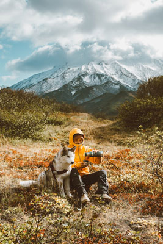

Caring for Alaskan Dogs
Diet 
Since most Alaskan dog breeds are works dogs, having a highly-nutritious, well-packed diet is essential to a long, healthy life. You'll want to find a blend that is not only bred-specific, but also age and season specific. They will burn more calories in the winter to stay warm and also because that is typically their busiest part of the year if they are a work dog. But in the summer, you won't want to overfed them when there is more downtime.
Work
Like the old saying goes, "A happy dog is a working dog," and it's true! Dogs are just like people, and enjoy being helpful and finding meaningful work. Alaskan dogs are strong, fast, and an easily trainable breed, which makes them perfect for sledding and pulling in snowy enviornments. Properly training and raising them is escially to their care. Take the Greenland dog for example. This is a bred that is free to roam and explore during their puppyhood, but when they reach adulthood they are trained to be contributing members of their society.
Grooming
Alaskan dogs must stay warm in frigided enviornements. And to do that they have thick, double-coated fur. Keeping their fur knot free and smooth will improve your dogs happiness as well as your own. During the summer they will shed some of it off, so managing it throughout the year will alleviate the yearly mess.